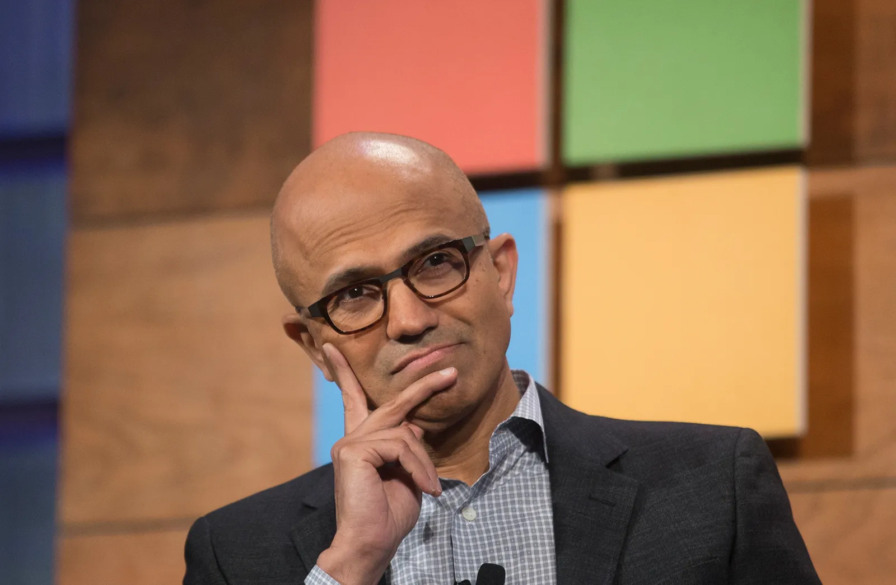

Designing for All
- Personal Inspiration: His experiences raising his late son Zain, who had cerebral palsy, profoundly influenced his dedication to accessible design.
- Inclusive Hardware: Championed the creation of the Xbox Adaptive Controller, allowing gamers with limited mobility to play seamlessly.
- "Hit Refresh": Authored his bestseller not for profit, but to donate proceeds to Microsoft Philanthropies to bridge the digital divide.
- Global Tech Equity: Mandated that new software must be universally accessible, ensuring technology empowers marginalized global communities.
Digital archives and executive broadsheets supporting this presentation:

Archival Citations